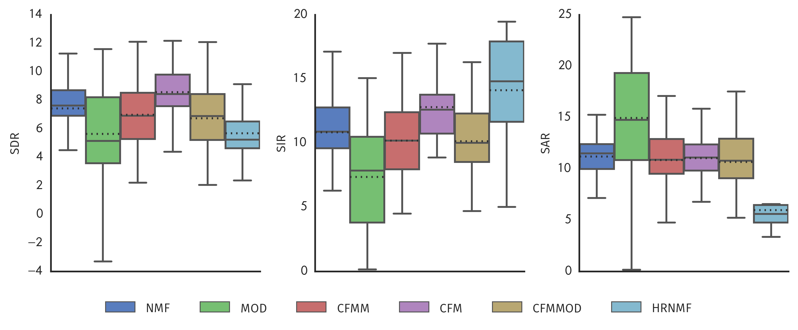
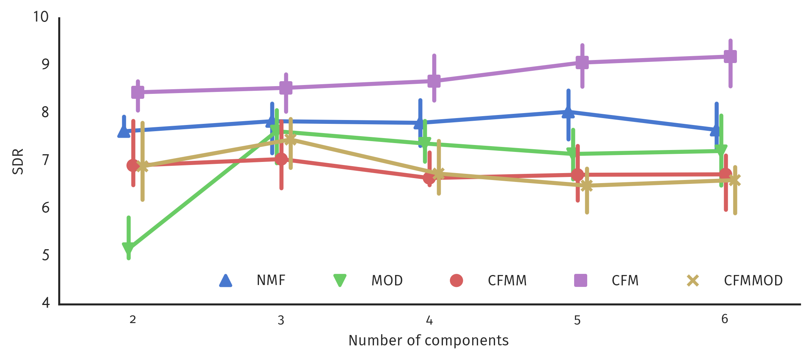

Common Fate Model for Unison Source Separation
Fabian-Robert Stöter, Antoine Liutkus, Roland Badeau, Bernd Edler, Paul Magron
March 21, 2016


NMF
$$\hat{\mathbf{V}}_{f,t} \approx \sum\limits_{j=1}^{J}w_{fj}\cdot h^T_{tj} \approx \sum\limits_{j=1}^{J} \mathbf{w}_{j} \circ \mathbf{h}_{j} \approx \mathbf{W}\mathbf{H}$$
NMF

CPD/PARAFAC/NTF
$$\hat{\mathbf{V}}_{f,b,t} \approx \sum\limits_{j=1}^{J}w_{fj}\ m_{bj} \ h_{tj} \approx \sum\limits_{j=1}^{J} \mathbf{w}_{j}(f) \circ \mathbf{m}_{j}(b) \circ \mathbf{h}_{j}(t)$$
CPD/PARAFAC/NTF

CFM
$$\hat{\mathbf{V}}_{a,b,f,t} \approx \sum\limits_{j=1}^{J}p_{abfj}\ h_{tj} \approx \sum\limits_{j=1}^{J} \mathbf{P}_{j}(a,b,f) \circ \mathbf{h}_{j}(t)$$
Common Fate Model

Models
- NMF: Non-Negative Matrix Factorization $V(f,t) = W(f)\times H(t)$
- CFM: Common Fate Model, $V(a,b,f,t) = P(a,b,f)\times H(t)$
- HR-NMF: High Resolution NMF model, Subband AR filtering of NMF excitation
- MOD: Barker 2013 $V(f,m,t) = W(f)\times A(m)\times H(t)$
- CFMM: Common Fate Magnitude Model, $V(a,b,f,t) = P(a,b,f)\times H(t)$
- CFMMOD: CFMM with $a=1$, $V(a,b,f,t) = P(a,b,f)\cdot H(t)$
Evaluation Results
Number of Components
Open Source Implementation
pip install commonfate
np.einsum('abfj,tj->abft', A, H)
Ⓒ AudioLabs, 2016
Common Fate Model for Unison Source Separation